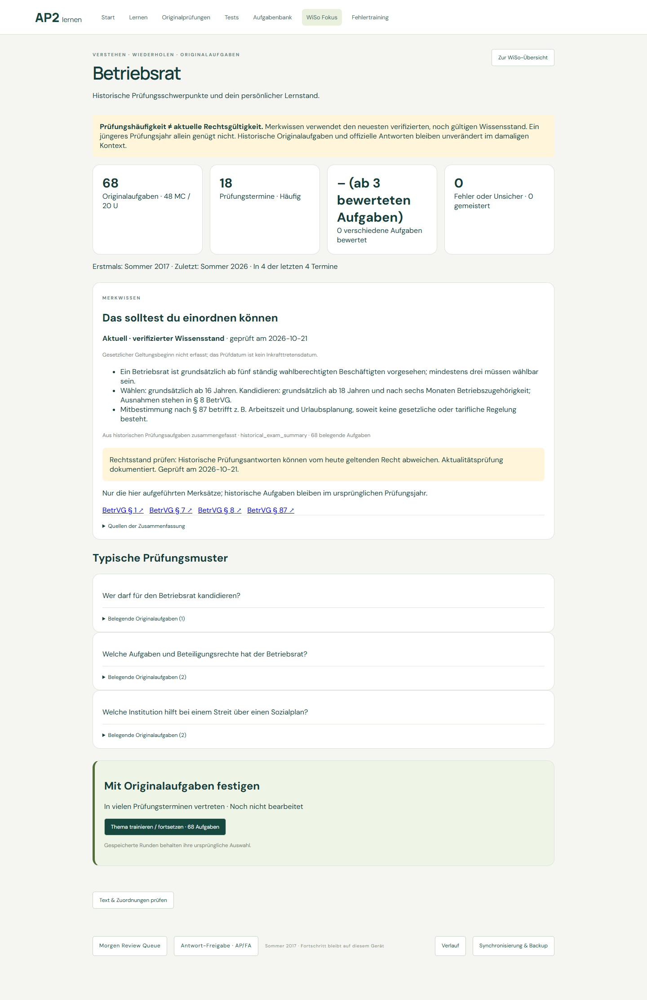
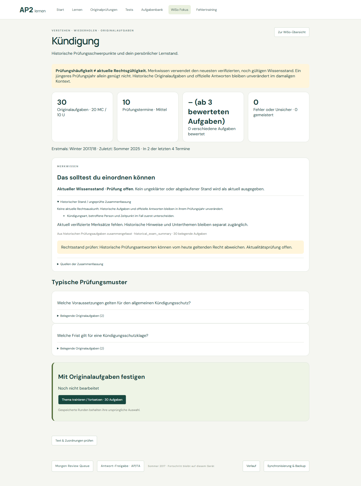
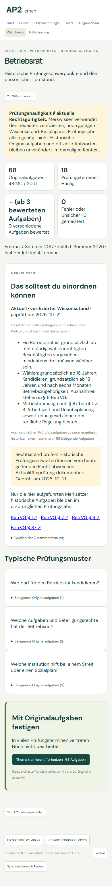

21. Oktober 2026 · WiSo Fokus
Aktuelles Merkwissen nutzt ausschließlich verifizierte, noch gültige Wissensversionen. Explizite Ersatzbeziehungen erhalten alte Fassungen. Ungeklärte Nachfolger, widersprüchliche Versionen und abgelaufene Regeln führen zur Prüfung, nicht zur Mehrheitsentscheidung.
Historische Originalfragen und offizielle Antworten bleiben unverändert. Die Häufigkeitsanalyse bleibt ebenfalls unverändert. Unbekannte gesetzliche Wirksamkeitsdaten werden nicht durch Prüfdaten ersetzt.
Sechs Python-Versionstests und ein Browser-Gültigkeitstest decken Ersatz, Konflikte, Zukunft, Ablauf und unbekannte Daten ab. Vollständige Frontend-Suite: 233 bestanden, 3 lokale Emulator-Skips. WiSo-bezogene Python-Discovery: 27 bestanden.
Browser-Nachweise · Verifizierter aktueller Stand · Noch nicht aktuell verifizierte Zusammenfassung


